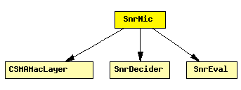

File: NetworkInterfaces/MF80211/SnrNic.ned
This is the easiest nic to implement "real" network behaviour. It uses the CsmaMacLayer and the SnrDecider and SnrEval modules.
The csma mac provides basic medium access and is used here to prevent a host from trying to send a message while it is still in receive mode.
The phy layer modules allow to account for collision and take fading into account so that messages can actually be lost.
IMPORTANT:
In order to work with the ChannelControl module the snrEval
module has to be called "snrEval" in the ned file.
This component has been taken over from Mobility Framework 1.0a5.
See also: BasicMacLayer, SnrDecider, SnrEval
Author: Daniel Willkomm
The following diagram shows usage relationships between modules, networks and channels. Unresolved module (and channel) types are missing from the diagram. Click here to see the full picture.
If a module type shows up more than once, that means it has been defined in more than one NED file.
| CSMAMacLayer | CSMA MAC protocol |
| SnrDecider | Decider module to be used with SnrEval |
| SnrEval | Represents the radio. Frames received from higher layers (typically the MAC protocol) are transmitted on the radio channel, using the global ChannelControl module. Frames received on the radio channel will have their signal-noise ratio evaluated and passed up to the decider. (It is the decider's task to determine whether the frame was received correctly, and pass it up to the MAC layer). |
| Name | Direction | Description |
|---|---|---|
| uppergateIn | input | to upper layers |
| uppergateOut | output | from upper layers |
| Name | Type | Description |
|---|---|---|
| mac.debug | bool | debug switch |
| mac.headerLength | numeric const | |
| mac.queueLength | numeric const | |
| decider.debug | bool | debug switch |
| decider.snrThresholdLevel | numeric | |
| snrEval.channelNumber | numeric const | channel identifier |
| snrEval.debug | bool | debug switch |
| snrEval.transmitterPower | numeric const | |
| snrEval.bitrate | numeric const | |
| snrEval.headerLength | numeric const | |
| snrEval.thermalNoise | numeric const | |
| snrEval.pathLossAlpha | numeric const | |
| snrEval.sensitivity | numeric const |
module SnrNic gates: in: uppergateIn; // to upper layers out: uppergateOut; // from upper layers submodules: mac: CSMAMacLayer; display: "p=60,50;b=32,30;i=prot2"; decider: SnrDecider; display: "p=68,100;b=16,16;i=box2_s;o=white"; snrEval: SnrEval; display: "p=60,150;b=32,30;i=prot3"; connections: decider.uppergateOut --> mac.lowergateIn display "m=m,50,50,75,0"; snrEval.uppergateIn <-- mac.lowergateOut display "m=m,25,0,25,0"; snrEval.uppergateOut --> decider.lowergateIn display "m=m,73,0,50,50"; mac.uppergateOut --> uppergateOut; mac.uppergateIn <-- uppergateIn; display: "p=10,10;b=101,180,rect;o=white"; endmodule